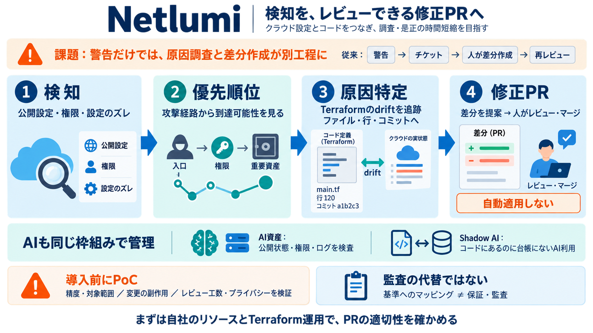

Show HN: Netlumi – Cloud and AI agent security with auto-remediation(Live demo) | Hacker News
your IaC code. All you need to do is review and merge. Each PR says what was checked, and we validate our fixes before w…

警告で終わると、担当割当・原因特定・差分作成が別工程になり、是正が遅れます。
継続スキャンで公開設定や権限、整合性のズレを見つけます。
Terraform逸脱（drift）やコミット/開発者へ紐付け、修正PRへ落とします。
手作業変更や別経路の適用で、意図した統制から外れる。
コード側の行・コミットへ接続し、再発防止につなげる。
問題を検知
原因を特定
差分をPR化
警告→チケット→人が差分作成→再レビュー
検知→原因紐付け→修正差分（Fix PR）
クラウド（設定）＋リポジトリ（コード/呼び出し）を結び、AI利用のレビュー漏れを減らす狙いです。
承認・把握されないまま運用に入る可能性がある。
レビューされないAI利用を可視化して是正につなげる。
外部提出用途では、契約・証跡要件に対して別途の検証が必要です。
誤検知率/見逃し率、カバーする設定パターン
変更の副作用、破壊/置換のブロック条件
誤検知時の運用フロー、plan前提条件、PRレビュー工数
まず自社のリソース種別とTerraform運用に合わせてPoCし、PRの適切性と運用・プライバシー要件を確かめるのが堅実です。
Netlumiの「修正PRをレビューしてマージするまで自動適用しない」方針や、チェック内容の明示に関する言及。
your IaC code. All you need to do is review and merge. Each PR says what was checked, and we validate our fixes before w…
Finding a misconfiguration is half the job; closing it fast is the other half. Look for guided remediation, automated fi…
Code-to-cloud remediation: Findings can be traced back to repositories and owners, giving engineering teams a clearer fi…
IaC scanning analyses your Terraform, CloudFormation, Pulumi, and ARM templates before deployment — it catches misconfig…
Privacy Dashboard More Info ## Recommended Stories [...] Oops, something went wrong Skip to navigation Skip to right…